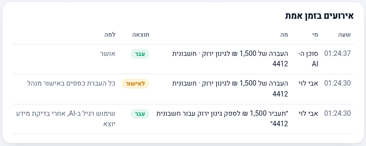

תרחיש אחד, שלוש דקות: משרד רואי חשבון בדוי, העברה של 1,500 ₪ לספק גינון. הבקשה נעצרת, המנהל מאשר, והאירוע נרשם.
פתחו את ההדגמהמשרדי רואי חשבון מחזיקים מידע פיננסי של לקוחות. כשעוזר AI יכול לא רק לענות אלא גם לבקש פעולה, כמו להעביר כסף, צריך מי שמחליט מה מותר, מה נחסם ומה מחכה לאישור אנושי.
AI Shield הוא שער הרשאות בין העוזר לבין הפעולה: מותר עובר, אסור נחסם, רגיש מחכה למנהל, והכול נרשם.
הרעיון המקורי של הצוות: שער סוכנים. הדמו כאן מוכיח תרחיש אחד שלו.

| שעה | מי | מה | תוצאה | למה |
|---|---|---|---|---|
| 01:24:37 | סוכן ה-AI | העברה של 1,500 ₪ לגינון ירוק · חשבונית 4412 | עבר | אושר |
| 01:24:30 | אבי לוי | העברה של 1,500 ₪ לגינון ירוק · חשבונית 4412 | לאישור | כל העברת כספים באישור מנהל |
| 01:24:30 | אבי לוי | "תעביר 1,500 ₪ לספק גינון ירוק עבור חשבונית 4412" | עבר | שימוש רגיל ב-AI, אחרי בדיקת מידע יוצא |
מה שחסר למוצר אמיתי: שער בצד שרת בין ה-AI למערכות אמיתיות, זיהוי משתמשים אמיתי, אישור ב-Slack או בטלפון, ויומן בצד שרת.
יעד להשערה, עדיין לא נבדק מול לקוחות
משרד רואי חשבון קטן בישראל, בלי מפתחים, שבו מנהל המשרד רוצה לדעת מה ה-AI עושה עם מידע של לקוחות. הניסוח של הערך שלנו: לא "אישורים לסוכנים" (כבר יש כלים כאלה למפתחים), אלא שער מוכן, בעברית, עם הרשאות לפי תפקיד, שמנהל לא-טכני יכול להפעיל.
מה עדיין לא יודעים: אם משרדים כאלה משתמשים ב-AI עם מידע לקוחות, מי אצלם מאשר תשלום, ואם מישהו ישלם על זה. אין לנו לקוחות או נתוני ביקוש.
הצעד הבא: לשאול כמה משרדים אמיתיים את שלוש השאלות האלה לפני שבונים עוד.
AI Venture Night 2026 · פרויקט הקאתון. לדף הראשי